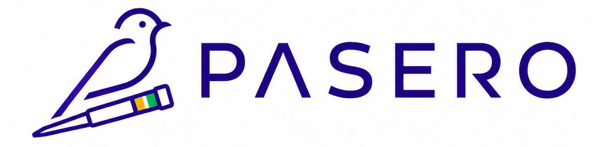
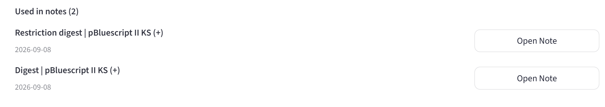

EXPERIMENT / 02414 AUG 2024
AGO2 silencing assay
Compare knockdown efficiency across the let-7b pathway.

Notes · Resources
Write the note, add the materials, and keep the context that connects them. 写下实验，加入材料，也保留它们彼此相连的上下文。 ノートを書き、材料を加え、そのつながりまで残します。
01
Start a blank record or work from a protocol. Text, tables, dates, and observations stay together.从空白记录或 Protocol 开始，让文字、表格、日期与观察结果自然留在一起。空白の記録や Protocol から始め、文章、表、日付、観察結果をひとつにまとめます。

02
Add plasmids, cells, reagents, or earlier notes without leaving the experiment record.无需离开实验记录，就能加入质粒、细胞、试剂或过去的笔记。実験記録を離れずに、プラスミド、細胞、試薬、過去のノートを追加できます。

The experiment creates connections实验创造连接実験がつながりを生む
Compare knockdown efficiency across the let-7b pathway.
03
Open a material and return to every note that used it. Its history stays visible without extra bookkeeping.打开一种材料，就能回到所有使用过它的笔记；无需额外整理，也能看清它的历史。材料を開けば、それを使ったすべてのノートに戻れます。追加の整理なしで履歴を確認できます。
